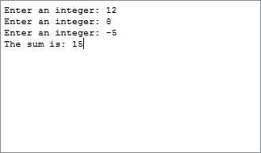

The entry point for the subroutine: pread.
Here
is the complete example program.
The global symbols have been correctly declared.
Study how each module uses the directives
.text and .data
to describe its sections.
Each file describes what part of it is to go into the
(one and only) text section of run-time memory
and the (one and only) data section.
With a real OS, each source file is separately assembled into an object file which has a text section and a data section. The linker has the job of putting all the separate pieces together into the right sections of run-time memory. This is somewhat like putting together a jigsaw puzzle to form one picture from many pieces.
As you "Load" each file from the file menu, QtSpim will ensure that the text sections are placed into the single text section of (simulated) main storage and that the data sections are placed into the data section. In a real operating system, this is the job of the linker and loader.
# addthree.asm --- read in three integers and print their sum
#
# This program uses simple linkage.
#
# Settings: Load delays ON; Branch delays ON
# Trap file ON; Pseudoinstructions ON
#
.text
.globl main
main:
jal pread # read first integer
nop #
move $s0,$v0 # save it in $s0
jal pread # read second integer
nop #
move $s1,$v0 # save it in $s1
jal pread # read third integer
nop #
move $s2,$v0 # save it in $s2
addu $s0,$s0,$s1 # compute the sum
addu $s3,$s0,$s2 # result in $s3
li $v0,4 # print a heading
la $a0,heading
syscall
move $a0,$s3 # move sum into parameter
li $v0,1 # print the sum
syscall
li $v0,10 # exit
syscall
.data
heading:
.asciiz "The sum is: "
# pread.asm -- prompt for and read an integer
#
# on entry:
# $ra -- return address
#
# on exit:
# $v0 -- the integer
.text
.globl pread
pread:
la $a0,prompt # print string
li $v0,4 # service 4
syscall
li $v0,5 # read int into $v0
syscall # service 5
jr $ra # return
nop #
.data
prompt:
.asciiz "Enter an integer: "
Here is a picture of the console window after the program has run:

Could pread be used as-is in other programs?